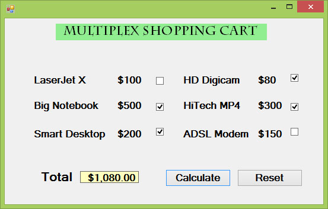

Visual Studio 2013 Lesson 20: Using Check Box
[Lesson 19] << [Contents] >> [Lesson 21]
Example 20.1: Shopping Cart
In this example, we add a few labels, two buttons and six check boxes. We declare the price of each item using the Const keyword. If a check box is being ticked, its state is True else its state is False. To calculate the total amount of purchase, we use the mathematical operator +=. For example, sum+=BN is actually sum=sum+BN. Finally, we use the ToString method to display the the amount in currency.
The Code
Public Class Form1
Private Sub BtnCal_Click(sender As Object, e As
EventArgs) Handles BtnCal.Click
Const LX As Integer = 100
Const BN As Integer = 500
Const SD As Integer = 200
Const HD As Integer = 80
Const HM As Integer = 300
Const AM As Integer = 150
Dim sum As Integer
If CheckBox1.Checked = True Then
sum += LX
End If
If CheckBox2.Checked = True Then
sum += BN
End If
If CheckBox3.Checked = True Then
sum += SD
End If
If CheckBox4.Checked = True Then
sum += HD
End If
If CheckBox5.Checked = True Then
sum += HM
End If
If CheckBox6.Checked = True Then
sum += AM
End If
LblTotal.Text = sum.ToString(“c”)
End Sub
Private Sub BtnReset_Click(sender As Object, e As
EventArgs) Handles BtnReset.Click
CheckBox1.Checked = False
CheckBox2.Checked = False
CheckBox3.Checked = False
CheckBox4.Checked = False
CheckBox5.Checked = False
CheckBox6.Checked = False
End Sub
End Class
The Runtime Interface

{kind=link}
Figure 20.1: Shopping Cart
Here is another example
Example 20.2
Private Sub Button1_Click(ByVal sender As System.Object, ByVal e As System.EventArgs) Handles Button1.Click
Const large As Integer = 10.0
Const medium As Integer = 8
Const small As Integer = 5
Dim sum As Integer
If CheckBox1.Checked = True Then
sum += large
End If
If CheckBox2.Checked = True Then
sum += medium
End If
If CheckBox3.Checked = True Then
sum += small
End If
Label5.Text = sum.ToString(“c”)
End Sub
Example 20.3
In this example, the text on the label can be formatting using the three check boxes that represent bold, italic and underline.
The Code
Public Class Form1
Private Sub ChkBold_CheckedChanged(sender As Object,
e As EventArgs) Handles ChkBold.CheckedChanged
If ChkBold.Checked Then
LblDisplay.Font = New Font(LblDisplay.Font, LblDisplay.Font.Style Or
FontStyle.Bold)
Else
LblDisplay.Font = New Font(LblDisplay.Font, LblDisplay.Font.Style And Not
FontStyle.Bold)
End If
End Sub
Private Sub ChkItalic_CheckedChanged(sender As
Object, e As EventArgs) Handles ChkItalic.CheckedChanged
If ChkItalic.Checked Then
LblDisplay.Font = New Font(LblDisplay.Font, LblDisplay.Font.Style Or
FontStyle.Italic)
Else
LblDisplay.Font = New Font(LblDisplay.Font, LblDisplay.Font.Style And Not
FontStyle.Italic)
End If
End Sub
Private Sub ChkUnder_CheckedChanged(sender As Object,
e As EventArgs) Handles ChkUnder.CheckedChanged
If ChkUnder.Checked Then
LblDisplay.Font = New Font(LblDisplay.Font, LblDisplay.Font.Style Or
FontStyle.Underline)
Else
LblDisplay.Font = New Font(LblDisplay.Font, LblDisplay.Font.Style And Not
FontStyle.Underline)
End If
End Sub
End Class
* The above program uses the CheckedChanged event to respond to the user selection by checking a particular check box, it is similar to the click event. The statement
LblDisplay.Font = New Font(LblDisplay.Font, LblDisplay.Font.Style Or FontStyle.Italic)
will retain the original font type but change it to italic font style.
LblDisplay.Font = New Font(LblDisplay.Font, LblDisplay.Font.Style And Not FontStyle.Italic)
will also retain the original font type but change it to regular font style. (The other statements employ the same logic)
The Output
{kind=link}